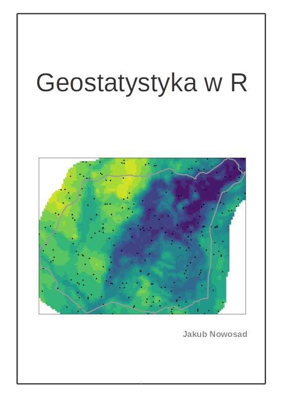

Geostatystyka w R
Jakub Nowosad
2016-09-03
1 Wprowadzenie

Masz przed sobą skrypt zawierający materiały do ćwiczeń z geostatystyki. Składa się ona z kilkunastu rozdziałów pokazujących jak: dodawać i wizualizować dane przestrzenne w R (rozdział 2), wykonywać wstępną eksplorację danych nieprzestrzennych (rozdział 3), wstępnie analizować dane przestrzenne (rozdział 4), wykorzystywać deterministyczne metody interpolacji (rozdział 5), rozumieć i tworzyć przestrzenne miary podobieństwa i niepodobieństwa (rozdział 6), modelować semiwariogramy bezkierunkowe i kierunkowe (rozdział 7), tworzyć estymacje jednozmienne (rozdział 8), estymacje danych kodowanych (rozdział 9), estymacje wielozmienne (rozdział 10), estymacje wykorzystujące dane uzupełniające (rozdział 11), oceniać jakość wykonanych estymacji (rozdział 12) oraz budować symulacje przestrzenne (rozdział 13). Dodatkowo w rozdziale 14 można znaleźć odnośniki do innych materiałów związanych z geostatystyką i R. Wszystkie zaprezentowane przykłady zawierają również kod w języku R. Skrypt został stworzony w R (R Core Team 2016) z wykorzystaniem pakietów bookdown (Xie 2016a), rmarkdown (Allaire et al. 2016), knitr (Xie 2016b) oraz programu Pandoc. Aktualna wersja skryptu znajduje się pod adresem https://bookdown.org/nowosad/Geostatystyka/.
Zachęcam do zgłaszania wszelkich uwag, błędów, pomysłów oraz komentarzy na adres mailowy nowosad@amu.edu.pl.
1.1 Wymagania wstępne
1.1.1 Oprogramowanie
Do odtworzenia przykładów użytych w poniższym skrypcie wystarczy podstawowa znajomość R. Aby zainstalować R oraz RStudio można skorzystać z poniższych odnośników:
Dodatkowo, użyte zostały poniższe pakiety R (Jed Wing et al. 2016; Wei and Simko 2016; Hijmans et al. 2016; Nychka et al. 2016; Wickham and Chang 2016; Auguie 2016; Pebesma and Graeler 2016; Giraudoux 2016; Hijmans 2016; Perpinan Lamigueiro and Hijmans 2016; Bivand, Keitt, and Rowlingson 2016; Bivand and Rundel 2016; Pebesma and Bivand 2016).
pakiety <- c('caret', 'corrplot', 'dismo', 'fields', 'ggplot2', 'gridExtra',
'gstat', 'pgirmess', 'raster', 'rasterVis', 'rgdal', 'rgeos', 'sp')Pakiety R używane w tym skrypcie można również zainstalować poprzez funkcję install.packages():
install.packages(pakiety)Lub też za pomocą pakietu geostatbook (Nowosad 2016), który automatycznie zainstaluje wszystkie wymagane pakiety:
# install.packages("devtools")
devtools::install_github("nowosad/geostatbook")1.1.2 Dane
Dane wykorzystywane w tym skrypcie można pobrać w postaci spakowanego archiwum (dla rozdziału 2) oraz korzystając z pakietu geostatbook (dla kolejnych rozdziałów). Dodatkowo, przy instalacji pakietu geostatbook pobierane są wszystkie inne pakiety potrzebne do pełnego korzystania z materiałów zawartych w skrypcie.
- Archiwum zawierające dane do rozdziału drugiego
- Dane do kolejnych rozdziałów są zawarte w pakiecie geostatbook:
# install.packages("devtools")
devtools::install_github("nowosad/geostatbook")Aby ułatwić korzystanie ze skryptu, rozdziały od 3 do 13 rozpoczynają się od wczytania wymaganych pakietów oraz zbiorów danych.